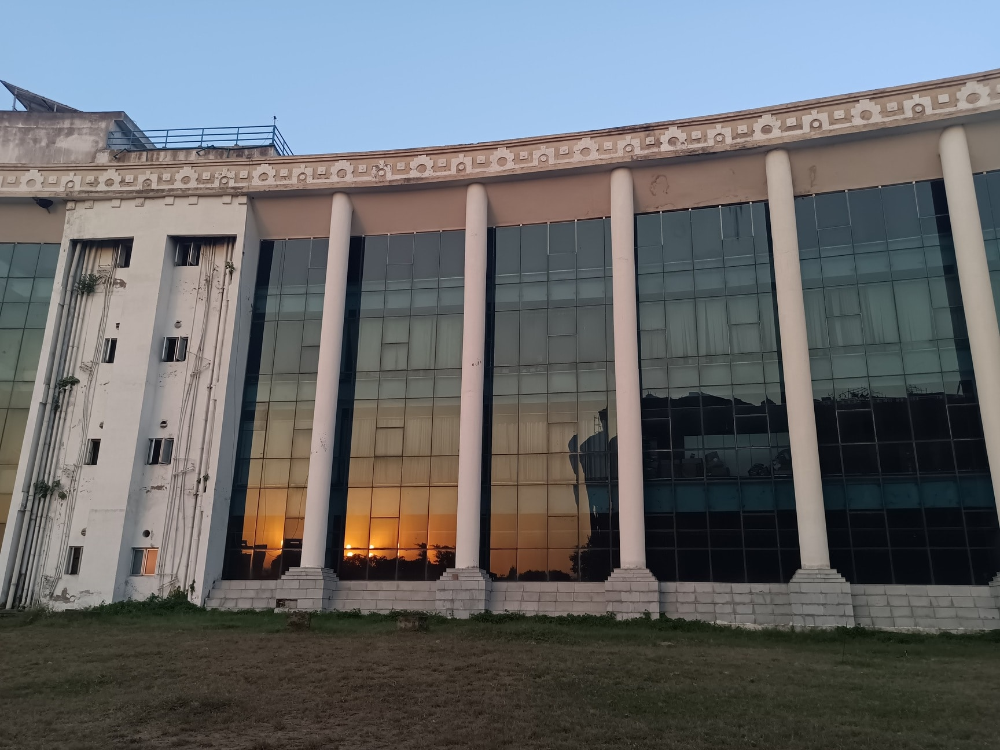
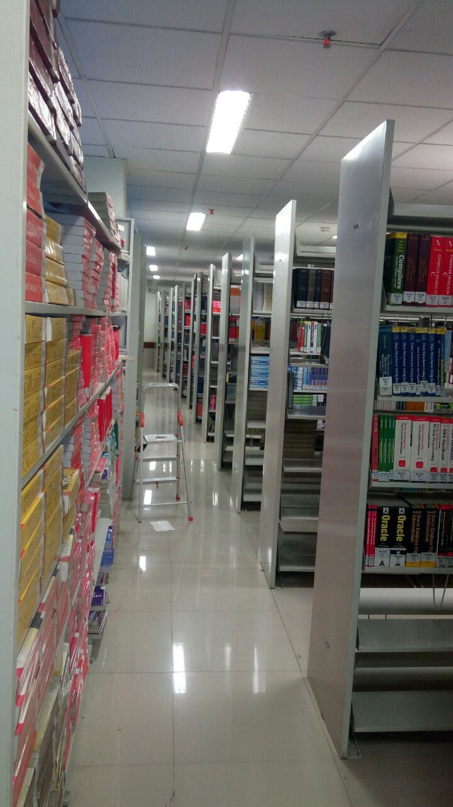
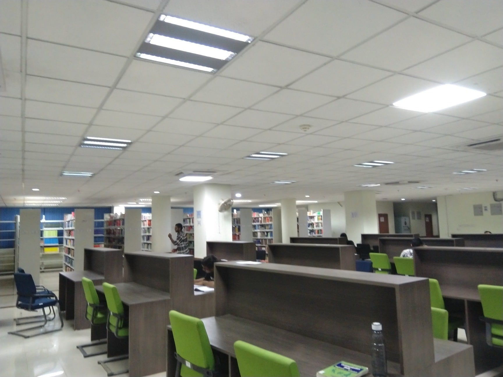
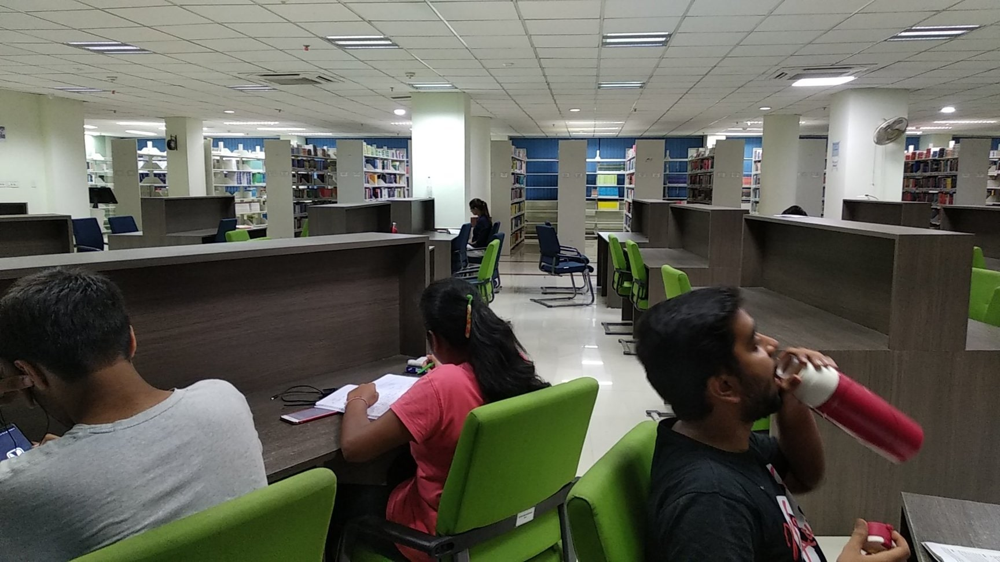
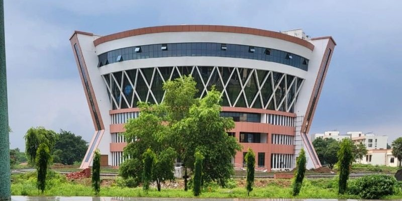

Department of Computer Science and Engineering
Indian Institute of Technology Patna is an institution of national importance established by the Government of India through an Act of Parliament (The Institutes of Technology Amendment Act) on August 6, 2008. The Institute is located at Bihta, approximately 35 kilometers southwest of Patna, Bihar.
The permanent campus spans 501 pristine acres, master-planned with state-of-the-art academic complexes, computational clusters, faculty residences, student hostels, and international-standard sports arenas. IIT Patna is ranked among the premier engineering institutions in the country by NIRF (National Institutional Ranking Framework).
The Department of Computer Science and Engineering is recognized as a leader in educational innovation, fostering technical excellence, multidisciplinary scientific research, and vibrant entrepreneurship.

IIT Patna operates under the guidance of the Council of IITs headed by the Minister of Education, Government of India. Key administrative governance bodies include:
The mission of the Department of Computer Science and Engineering at IIT Patna is to:
Our vision is to:
IIT Patna was inaugurated on August 6, 2008, initially operating from its transit campus in Patliputra Colony, Patna, with mentorship from IIT Guwahati. In 2015, the institute shifted to its permanent campus at Bihta, inaugurated by the Prime Minister of India.
The Department of Computer Science and Engineering began its journey with its first B.Tech batch in 2008. Postgraduate M.Tech and doctoral Ph.D. programs were subsequently introduced in 2010. Today, the department has produced over 1,500 distinguished alumni serving in premier technology giants, prestigious research laboratories, and leading universities globally.

The emblem of Indian Institute of Technology Patna encapsulates the harmony of ancient wisdom and modern technology:
The Central Library at IIT Patna is a modern academic knowledge hub housing over 50,000 volumes, e-journals, digital reading spaces, and study rooms:




